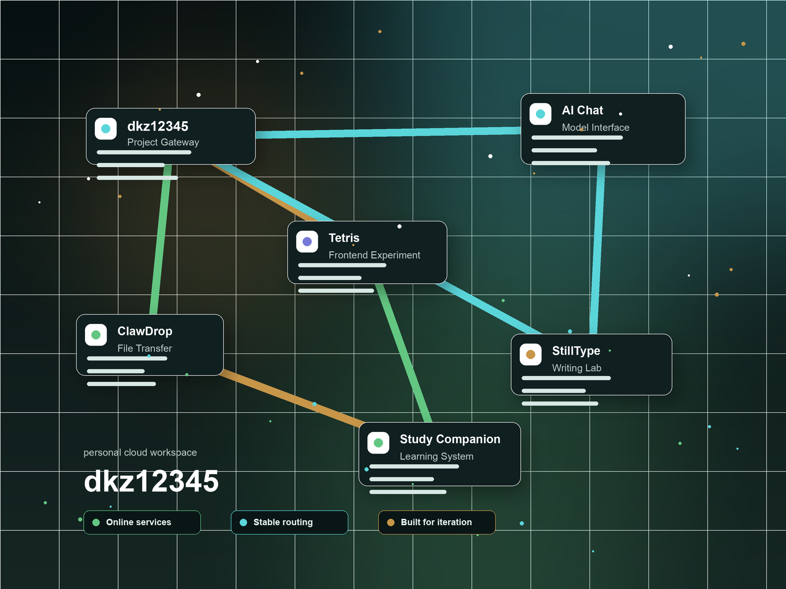

轻量文件投递与云端传输服务。用于在设备、脚本与服务器之间稳定传递文件。
clawdrop.dkz12345.com
进入 ClawDrop

Cloud Workspace
dkz12345 将分散的项目收束到一个稳定入口：文件传输、AI 对话、学习系统与前端实验都可以在这里被发现、进入和继续生长。
它不是一次性页面，而是一个逐步成型的系统门面，用来承载凯中长期维护的个人云端基础设施。
Current Services
轻量文件投递与云端传输服务。用于在设备、脚本与服务器之间稳定传递文件。
面向云端部署的 AI 对话入口，专注于稳定、轻量和可持续扩展的模型接入体验。
围绕文字、创作与输入体验展开的项目，让练习、表达与节奏管理保持在同一个云端入口。
学习计划与陪伴系统，用更清晰的节奏组织目标、周期和日常推进。
小游戏与实验性前端项目，用轻量互动保留创意验证和界面练习的空间。
Built from experiments
最初，它只是几个运行在本地的实验项目。随着服务器、域名和部署链路逐步打通，这些分散的工具开始被整理成一个可以长期运行的云端工作台。
dkz12345 是这个过程的入口：它记录工具如何从想法变成服务，也承载后续更多系统的接入。每个服务都不是孤立的 demo，而是凯中长期工具链的一部分。
System Capabilities
面向静态站点与轻量服务的云端发布链路。
为云端 AI 对话入口保留清晰、可持续扩展的接入层。
在设备、脚本和服务器之间完成轻量文件传递。
把不同子域名和服务收束成可发现的入口体系。
围绕个人工具、学习和自动化场景持续沉淀基础设施。
当前版本先可用，后续以更稳定的方式继续演进。
Roadmap
Personal cloud workspace · 2026
把模型接入、对话入口和自动化能力整理成更稳定的工具层。
继续扩展计划、周期、反馈与复盘，形成更完整的学习工作流。
让文件投递、数据保存和跨设备流转更像一个可依赖的基础组件。
为自动化任务、远程控制和项目运维预留统一的管理入口。
逐步汇总项目状态、部署记录和服务健康，让入口页变成真正的系统门面。